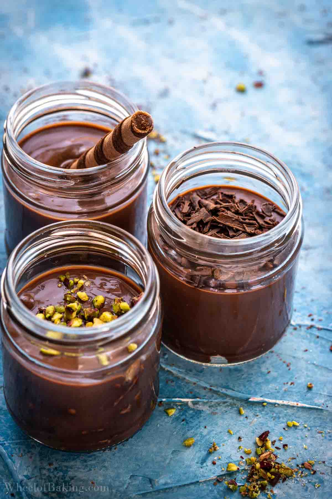

Turkish Chocolate Pudding

Description
Supangle is a popular Turkish dessert consisting of a base layer of cake
pieces that are topped with rich chocolate pudding. The pudding is made with
milk, sugar, flour, cocoa powder, butter, and dark chocolate. Supangle is traditionally
garnished with ground walnuts, almonds, pistachios, or shredded coconut.
Due to the fact that it is typically served cold, a scoop of ice cream is
welcome addition on top. Although the name supangle comes from soupe anglaise /
zuppa inglese, it bears no resemblance to that dessert.
Ingredients
- Milk
- Cornstrach
- Sugar
- Egg yolk
- Chocolate
- Cocoa powder
- Butter
- Water
- Cake or biscuits
- Topping
Steps
- Place the sugar, cornstarch and cocoa powder in a medium-sized pot.
- Pour the milk in the pot and whisk to combine.
- Add the egg yolk and whisk once more.
- Place over medium-high heat (heat 6 out of 9 for example) and bring to a boil, stirring frequently. This will take about 5 minutes.
- When the pudding starts to boil and thicken, keep it on the heat for about 2 more minutes, to get rid of any starchy taste. Don’t forget to stir so that it doesn’t stick to the pot.
- Remove from the heat and add the chocolate. Stir until the chocolate has fully melted then add the butter. Whisk until completely smooth.
- Let it cool down (in the pot) for 10-15 minutes, stirring occasionally to prevent a film from forming on the surface.
- In the meantime, prepare the serving cups. Optional: Line the bottom of the cup with pieces of cake or tea biscuits.
- Pour the cold water over the pudding and whisk until shiny and smooth. The pudding will look lumpy and curdled initially but keep whisking and it will get smooth again.
- Fill the serving cups with chocolate pudding. Let it cool down slightly, if needed, then cover and refrigerate for about an hour, or until cold.